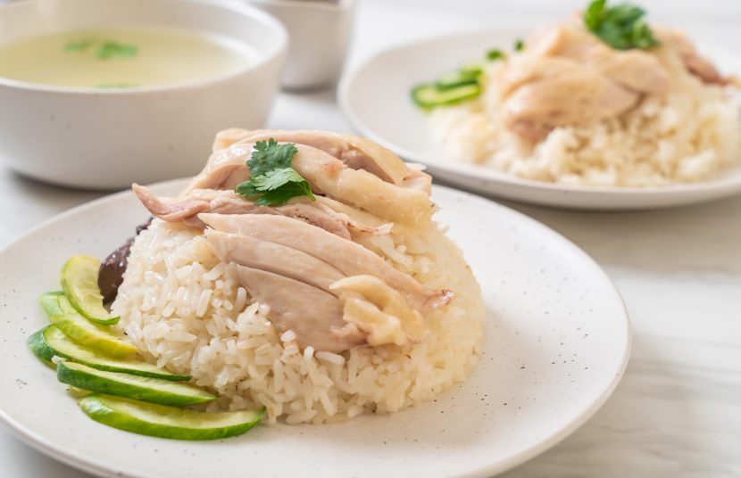
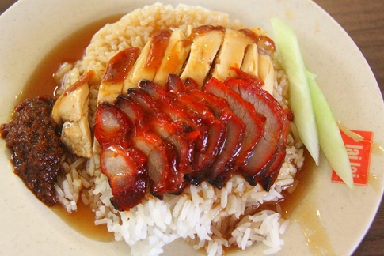
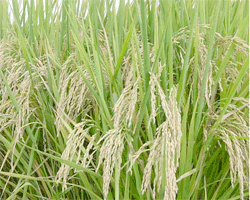

Ingredients and Recipe
Select a type of chicken to view the recipe.
Select a type of chicken to view the recipe.
Steamed Chicken is a simple and healthy dish that involves cooking chicken through steaming, which helps retain its natural flavors and nutrients. The chicken, often a whole bird or pieces such as breasts or thighs, is usually seasoned with ingredients like ginger, garlic, green onions, and soy sauce. Steaming the chicken results in tender, juicy meat with a subtle, clean taste. This method of cooking is particularly popular in Asian cuisines, where the steamed chicken is often served with a flavorful dipping sauce made from soy sauce, sesame oil, and other seasonings. It's a light and nutritious dish that highlights the pure taste of the chicken.
Roasted Chicken is a classic dish that involves cooking a whole chicken in an oven. The chicken is often marinated or seasoned with a blend of herbs, spices, and sometimes citrus or garlic, to enhance its flavor. During the roasting process, the chicken is cooked at high temperatures, which results in a crispy, golden-brown skin and juicy, tender meat. Roasted chicken can be served as a main course and is often accompanied by side dishes like roasted vegetables, potatoes, or rice. It is a versatile and widely enjoyed dish in many cuisines around the world.

Char Siew is a popular Chinese dish that features barbecued pork. It is known for its distinctive flavor and appearance, typically characterized by a sweet, savory, and slightly smoky taste. The pork is marinated in a mixture of honey, five-spice powder, fermented tofu, soy sauce, hoisin sauce, and rice wine, which gives it a rich, red color. It is then roasted or grilled until the exterior is caramelized and slightly charred. Char Siew is often served as a main dish or used as a filling in buns and pastries.
Here are some popular places where you can enjoy Chicken Rice:
Located in the heart of Tiong Bahru, this stall is famous for its succulent, boneless chicken and fragrant rice. Established over 20 years ago, it remains a favorite among locals and tourists alike.
Customer Reviews: "The best chicken rice I've ever had!" - Jane Doe
Signature Dish: Hainanese Boneless Chicken Rice
Opening Hours: 10:00 AM - 8:00 PM daily
Price Range: $5 - $10
Hawker Chan is world-renowned for its Michelin-starred soya sauce chicken. With affordable prices and exceptional taste, it’s a must-visit for any chicken rice lover.
Customer Reviews: "Incredible value for a Michelin-star meal!" - John Smith
Signature Dish: Soya Sauce Chicken Rice
Opening Hours: 11:00 AM - 9:00 PM daily
Price Range: $3 - $7
Ji De Lai offers a traditional Hainanese chicken rice experience. Known for its tender chicken and rich, flavorful rice, it's a beloved spot for many.
Customer Reviews: "Authentic and delicious!" - Mary Lee
Signature Dish: Hainanese Chicken Rice
Opening Hours: 9:00 AM - 7:00 PM daily
Price Range: $4 - $8
Hainan Province, China: The dish known as Wen Chang Ji, a boiled or poached chicken served with a citrusy, ginger-garlic dip, originates in Hainan.
1920s-1930s: Hainanese immigrants bring Wen Chang Ji to Singapore. They settle in the Hainanese quarters of Middle Road, Purvis Street, and Seah Street.
1940: The first known chicken rice restaurant in Singapore, Yet Con, opens. It serves a basic version of chicken rice with poached chicken, fragrant oily rice, cucumber slices, and ginger-chili sauce.
1950s: The chicken rice recipe is revolutionized with a Cantonese-influenced poaching method, resulting in tender, juicy chicken. This new style becomes popular.
1951: Swee Kee Chicken Rice, founded by Moh Lee Twee, who studied under Wong Yi Guan, opens. Swee Kee popularizes the modern version of chicken rice, becoming a benchmark for the dish.
1971: Chatterbox introduces a luxury version of chicken rice at the Mandarin Hotel, priced at $3.50. It emphasizes high-quality ingredients and skilled preparation, elevating the dish's status.
1983: Chatterbox's high-end chicken rice becomes immensely popular, generating $1.6 million in revenue. This period sees the normalization of boneless chicken rice and the introduction of chicken rice sets.
1997: Swee Kee Chicken Rice closes abruptly, leaving behind a legacy of transforming chicken rice into a mainstream dish.
2000s-2010s: Many traditional stalls continue to offer both steamed and roasted chicken rice, catering to evolving customer preferences.
2021: Yet Con, the oldest known chicken rice restaurant, closes.
2023: Rui Ji Traditional Chicken Rice and Curry Noodle opens in Toa Payoh, run by distant relatives of Swee Kee’s founder, using the original recipe.
2024: Chicken rice remains a beloved dish in Singapore, representing the nation’s diverse culinary heritage. It is served in both humble hawker stalls and upscale restaurants, with continuous innovation and adaptation.
Follow the steps to prepare your chicken rice dish. Be careful with the timing to get the best score!
Chicken: Raw

Rice: Uncooked
Score: 0
Place blocks to trap the chicken!